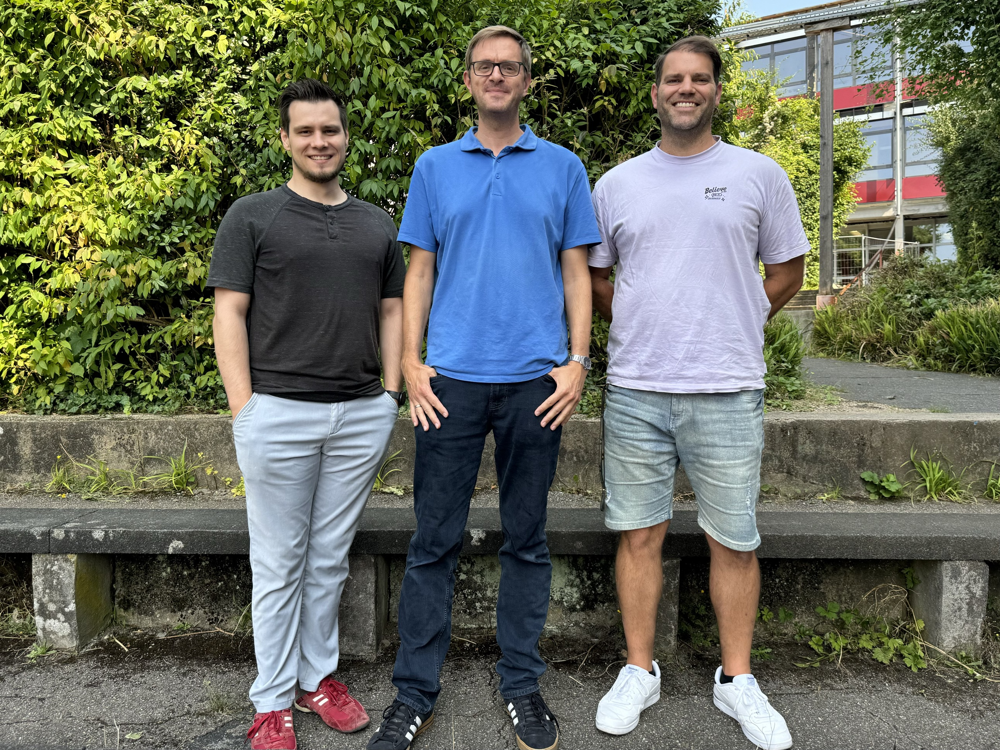

Chemie am NCG
Herzlich Willkommen auf der Informationsseite der Fachschaft Chemie am Nicolaus-Cusanus-Gymnasium in Bergisch Gladbach. Hier findest du alle wichtigen Informationen zum Fach Chemie.
Chemie ist überall!
Chemie begegnet uns jeden Tag: beim Backen, Händewaschen oder beim Laden des Handy-Akkus. Ziel des Unterrichts ist es, diese Vorgänge zu verstehen.
Ein wichtiger Bestandteil ist das Experimentieren. Durch eigenes Beobachten und Auswerten von Versuchen erschließen wir die Welt der Atome, Moleküle und Ionen.
Unterricht am NCG
Der Chemieunterricht findet in den Klassen 7–10 zweistündig statt. Es ist ein mündliches Fach mit praktischen Überprüfungen statt Klassenarbeiten.
Wir arbeiten regelmäßig experimentell in modernen Fachräumen und führen viele Versuche selbstständig durch. Zu Beginn der Klasse 7 erwerben alle den „Bunsenbrenner-Führerschein“.
Besonders interessierte Schüler:innen können an Wettbewerben wie der Science-Olympiade teilnehmen.
Oberstufe
In der Oberstufe bereiten wir auf das Abitur vor. Themen sind z. B. organische Chemie, Reaktionsmechanismen und Energieprozesse.
Chemie ist wichtig für Studiengänge wie Medizin, Pharmazie, Biologie und Lebensmittelwissenschaften.
Es gibt Grund- und Leistungskurse sowie Exkursionen z. B. zum Chempark Leverkusen.
Unsere Fachschaft

- Julien Degen
- Dr. Stawitz
- Roman Thomas